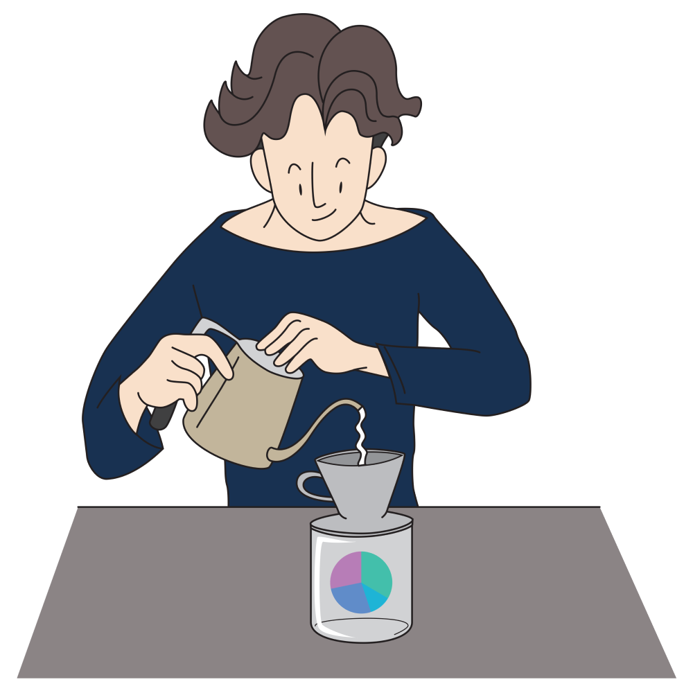

Brew-A-Port คืออะไร?
Brew-A-Port ช่วยทดสอบไอเดียการสร้างพอร์ตโฟลิโอและวางแผนลงทุนระยะยาว
ไม่ว่าจะคำนวณมูลค่าเงินออมสะสม จำลองพอร์ต ปรับพอร์ต ไปจนถึงวางแผนประหยัดภาษี
ลองเล่นเครื่องมือที่อยู่ในเมนูด้านบนได้เลย
ติดตามเครื่องมือใหม่ๆ หรือพูดคุยกันได้ที่